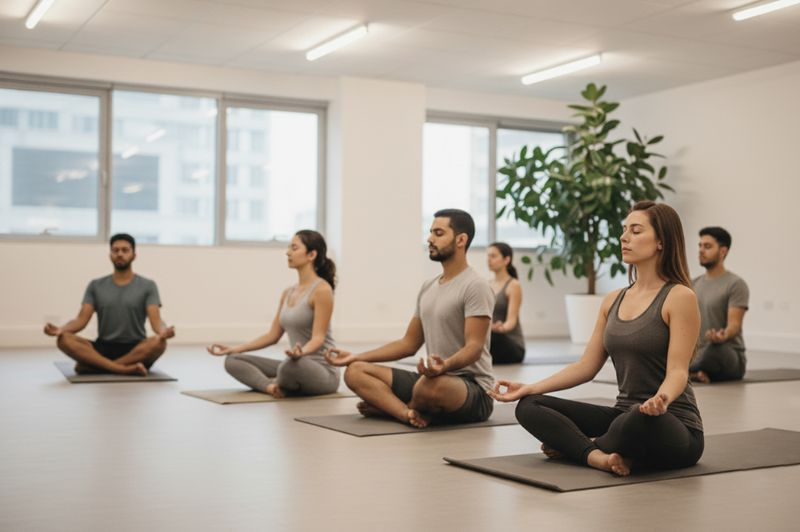
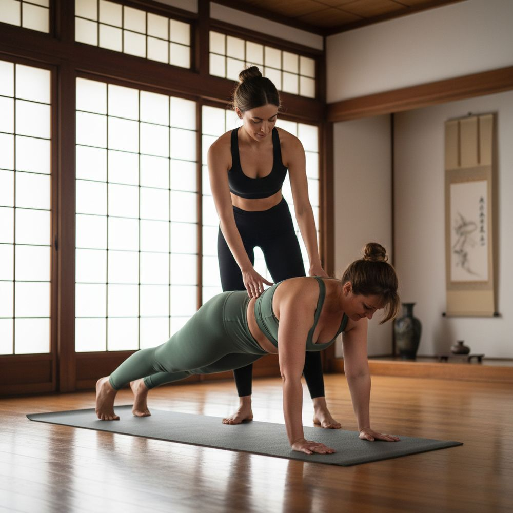

Des solutions personnalisées pour tous les âges et tous les besoins, du particulier à l'entreprise
Réserver une séanceDes statistiques qui parlent d'elles-mêmes
des actifs souffriront de mal de dos lié à la posture assise et au travail sur écran
des actifs ressentent une fatigue mentale ou de l'anxiété au travail
des personnes déclarent que le stress a un impact direct sur leur santé physique
Nos Packages sont adaptés à la taille de votre équipe

Un accompagnement continu pour ancrer les bénéfices dans le temps, maintenir un niveau de stress bas, améliorer le climat social et offrir un rendez-vous fixe de santé physique et mentale au sein de l'entreprise.
Intégration dans des journées de team building, séminaires annuels, journées dédiées à la QVT ou périodes de forte charge.
Les séances en groupe procurent un bien-être général et sont idéales pour toute personne souhaitant se libérer des tensions physiques et mentales, retrouver de la mobilité, de la souplesse et de l'énergie.
Aucun prérequis nécessaire : les mouvements sont adaptés à tous les niveaux, dans un cadre collectif bienveillant.
Les séances incluent :

Les séances individuelles Trinergy s’adressent aux personnes qui souhaitent apporter plus de calme, de clarté et d’équilibre dans leur vie, en traitant une problématique précise. Une séance individuelle permet un accompagnement entièrement personnalisé, adapté aux besoins spécifiques de la personne, à son rythme et à ses objectifs.
L’attention exclusive du praticien permet de cibler avec précision les sources de stress ou de blocages et de proposer des solutions concrètes et efficaces.
Chaque séance combine :
Étirements doux, mobilité articulaire et renforcement musculaire adapté à votre niveau
Techniques de sophrologie et de breath work pour gérer le stress et développer la conscience corporelle
Pratiques de pleine conscience, de méditation guidée et de visualisation positive pour cultiver la paix intérieure et la concentration
« En tant que Manager IT, toujours assis devant mon ordinateur avec une mauvaise posture, je sens que je perds en mobilité, mais grâce aux séances de Trinergy faites sur mesure, je me sens mieux dans mon corps, je bouge mieux, et ça me donne une sensation de bonheur. Je recommande vivement pour toute personne qui travaille toujours devant son PC, vous allez vous sentir renaître ! »
Abbes | Manager IT« Le jour même, méga détente, j’ai dormi à 21h. Ce que j’ai apprécié dans la séance, c’est que pour chaque mouvement, Azza nous a dit les détails : où mettre chaque membre, les muscles qui travaillent... Et comme on a principalement travaillé la partie haute du corps, j’ai l’impression que mon thorax s’est ouvert et que je respire mieux ! »
Meriem | enseignante universitaire« Ce que j’ai préféré le plus dans les séances de Trinergy c’est qu'on est à votre écoute. Étant donné que je me sentais rigide, le parcours a été adapté à mon besoin. Du coup c’est rassurant et on se sent très bien juste après la séance. J'ai gagné en mobilité et je me sentais bien dans mon corps. »
Sarra | Team managerInvestissez dans votre bien-être dès aujourd'hui
et récoltez l’harmonie du corps, du cœur et de l’esprit.